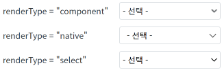
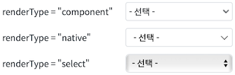
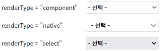
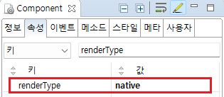

'renderType' 속성의 설정에 따른 비교 예제입니다. 이 속성을 통해 브라우저에 표현될 레이아웃의 구조를 설정할 수 있습니다. 설정 값에 따라 컴포넌트를 구성하는 HTML 태그가 다르며, 웹 접근성 지원 여부의 차이가 있습니다.
'renderType' 속성의 설정 비교
'renderType' 속성의 설정 값이 'select'인 경우는 브라우저마다 표현되는 방식이 다릅니다.
Image 1.Chrome 브라우저에서 renderType별 디자인

Image 2.Safari 브라우저에서 renderType별 디자인

Image 3.FireFox 브라우저에서 renderType별 디자인

1
속성을 정의합니다.
[필수] renderType="옵션 값"
[default: auto, component, native, select] 브라우저에 표현될 레이아웃 구조.
(옵션 설명)
component: 'select' 태그를 사용하지 않고, 최상위 'div' 태그 하위에 table 태그를 사용하여 항목을 표현.
native: HTML 'select' 태그를 사용. 모든 브라우저 환경에서 동일한 모양과 기능을 제공하며, 웹접근성 준수를 위해 title 속성을 필수로 생성해야 함.
select: HTML 'select' 태그로만 렌더링됨. 접근성을 지원하지만, 모든 브라우저에서 동일하게 표시되지 않음.
auto: 모바일 브라우저인 경우 'native', 그렇지 않을 경우 'component'로 동작.
Image 4.웹스퀘어 스튜디오의 Component View - 속성 설정 예시

Example 1.Source
<xf:select1 renderType="native"> <!-- 중략 --> </xf:select1>
renderType
title